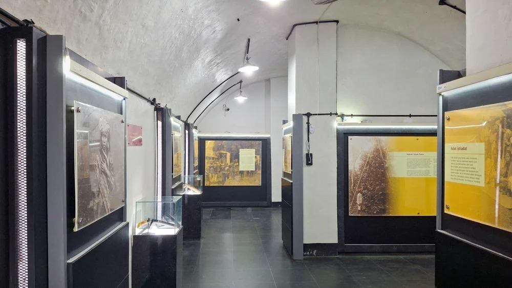

<!DOCTYPE html>
<html lang="en">
<head>
    <meta charset="UTF-8">
    <meta name="viewport" content="width=device-width, initial-scale=1.0">
    <title>Document</title>
</head>
<body>
    
</body>
</html>
<html lang="id">
<head>
    <title>About</title>
    <link rel="stylesheet" href="css/style.css">
</head>
<body>

<header class="navbar">
    <div class="logo">MuseumX</div>

    <div class="search-box">
        <input type="text" placeholder="Cari...">
    </div>

    <nav class="menu">
        <a href="index.html">Home</a>
        <a href="scan.html">Scan</a>
        <a href="gallery.html">Gallery</a>
        <a href="about.html">About</a>
        <a href="kuis.html">Quiz</a>
    </nav>
</header>

<section class="about-hero">

    <div class="about-overlay">

        <div class="hero-text">
            <h1>Tentang Museum Bengkulu</h1>

            <p>
                Mengenal sejarah, budaya, dan koleksi peninggalan
                bersejarah Bengkulu secara digital.
            </p>
        </div>

    </div>

</section>

    <!-- ================= ABOUT CONTENT ================= -->
    <section class="about">

        <div class="card about-card">

            

            <div class="card-content">

                <h2>Sejarah Museum Bengkulu</h2>

                <div class="description-box">

                    <p>
                        Museum Bengkulu merupakan museum daerah yang menjadi
                        pusat pelestarian budaya dan sejarah masyarakat Bengkulu dan  tempat penyimpanan koleksi benda-benda bersejarah dan adat 
                        budaya masing-masing suku yang terdapat di Bengkulu. Diantaranya adalah koleksi pakaian pengantin 
                        dan pakaian adat, alat-alat rumah tangga, senjata tradisional, bentuk-bentuk rumah adat, 
                        tulisan huruf Ka-ga-nga dan peninggalan-peninggalan masa prasejarah mulai dari masa peradaban batu sampai perunggu.
                        Selain itu, ada peninggalan kerajinan kain tenun yang terdiri dari kain tenun masyarakat Enggano dan aneka jenis motif kain besurek.
                    </p>

                    <br>

                    <p>
                        Museum Bengkulu mulai dibangun pada tahun 1978.Namun, museum yang diresmikan oleh Drs. 
                        GBPH Poeger baru difungsikan pada tanggal 3 Mei 1980. Pada awalnya, Museum Bengkulu
                         berlokasi di Benteng Marlborough. Akan tetapi, pada 3 Januari 1983 museum
                        ini menempati gedung baru di Jalan Pembangunan nomor 8 Padang Harapan.
                        Di dalam museum terdapat berbagai koleksi seperti kain
                        tradisional, alat musik daerah, alat tenun, senjata
                        tradisional, naskah kuno, dan peninggalan budaya suku
                        Rejang, Serawai, Melayu, serta masyarakat Bengkulu lainnya.
                    </p>

                    <br>

                    <p>
                        Museum Bengkulu tidak hanya berfungsi sebagai tempat
                        penyimpanan koleksi sejarah, tetapi juga sebagai sarana
                        edukasi bagi pelajar, mahasiswa, dan wisatawan untuk
                        mempelajari warisan budaya Nusantara.
                    </p>

                    <br>

                    <p>
                        Smart Museum Explorer dibuat untuk membantu pengunjung
                        mendapatkan pengalaman modern dalam mengenal koleksi
                        museum melalui galeri digital dan fitur pemindaian koleksi.
                    </p>

                </div>

            </div>

        </div>

    </section>

    <!-- ================= VISI MISI ================= -->
    <section class="categories">

        <h2>Visi & Misi</h2>

        <div class="category-grid">

            <!-- VISI -->
            <div class="category-item">

                <div class="category-icon">
                    🎯
                </div>

                <h3>Visi</h3>

                <p>
                    Menjadi pusat pelestarian budaya Bengkulu
                    yang modern, interaktif, dan edukatif.
                </p>

            </div>

            <!-- EDUKASI -->
            <div class="category-item">

                <div class="category-icon">
                    📚
                </div>

                <h3>Edukasi</h3>

                <p>
                    Memberikan informasi sejarah dan budaya
                    kepada masyarakat melalui teknologi digital.
                </p>

            </div>

            <!-- PELESTARIAN -->
            <div class="category-item">

                <div class="category-icon">
                    🏺
                </div>

                <h3>Pelestarian</h3>

                <p>
                    Menjaga koleksi budaya dan sejarah agar
                    tetap dikenal generasi mendatang.
                </p>

            </div>

        </div>

    </section>
</body>
</html>